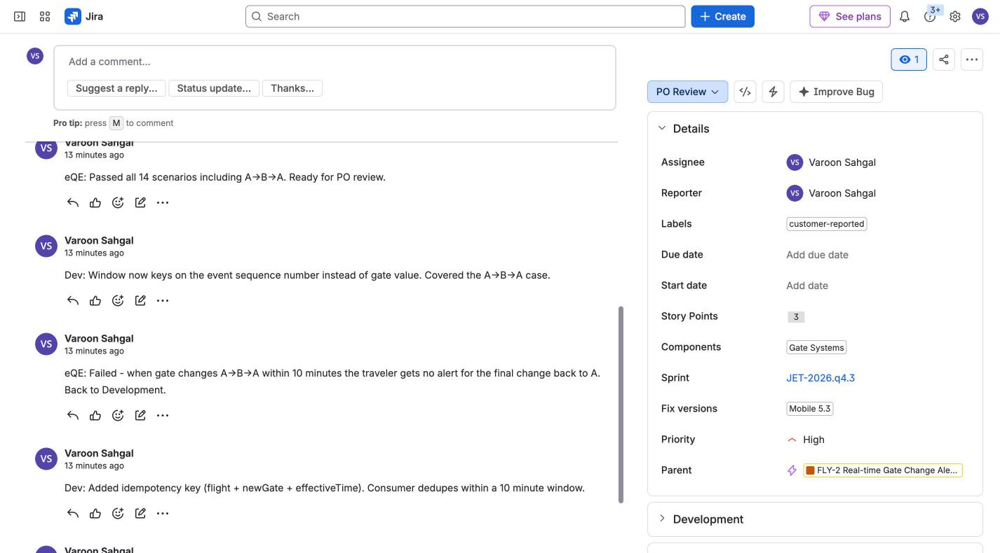

You can find and update work. Now you'll fly the team's standard: the Golden Template's two-board model and workflow, real refinement and sprint planning, JQL you write yourself, dashboards that answer real questions, and test management with Zephyr.
Explain each level of the work hierarchy and choose the right work type.
Describe why teams run two boards, and what each one is for.
State the purpose and exit criteria of every workflow status.
Name a sprint correctly, and apply a Definition of Ready.
Why this lesson anchors Level 2
The Golden Template is your organization's standard way to set up a Jira space. When every team uses the same hierarchy, statuses and naming, cross-team reporting works, people can move between teams without relearning Jira, and AI tools like Rovo and Claude get consistent data. Level 1 previews the vocabulary. Level 2 teaches you to operate it. Level 3 builds metrics on top of it.
1. The hierarchy: pick the right work type
Level
Work type
Use it for
Rule of thumb
Above epic
Initiative
Large outcome spanning several epics and quarters
Needs Premium hierarchy levels. Managed in Plans.
1
Epic
A body of work delivering a capability, e.g. FLY-2 Real-time Gate Change Alerts
Usually spans several sprints; has a start and due date
0
Story
User-facing value: "As a traveler, I…"
Fits in one sprint. Has acceptance criteria.
0
Task
Technical work with no direct user-facing value (infra, upgrades)
Still needs a clear "done"
0
Bug
Something that doesn't work as intended
Use Bug — not a custom "Defect" type or a defect label
0
Spike
Time-boxed research to reduce uncertainty
Output is a decision, not shipped code
0
Risk
A possible event that would hurt delivery
Has an owner, a mitigation and a review date
0
Improvement
Retro action or enhancement to an existing capability
Bring it into a sprint so it actually happens
−1
Sub-task
A slice of a story or task done by one person
Points live on the parent, not on sub-tasks
Standardize on Bug
Some teams log problems as a Task with a defect label, or in a custom "Defect" field. Those items vanish from bug dashboards and cross-team quality metrics. The sandbox has one on purpose: FLY-44 "Defect: login spinner never stops on slow 3G" is a Task. You'll catch it in the JQL Simulator.
2. Two boards, one space
The standard asks Scrum teams to keep two boards on the same space. Each board is just a saved filter plus a column layout. Same data, different lens.
Backlog Readiness · Kanban
Purpose: move ideas through discovery and refinement until they're truly ready.
No sprint. Work flows continuously.
Columns: New Idea → Product Refinement → Team Refinement → Ready
The Sprint Execution board for active sprint JET-2026.q4.3. FLY-22 is highlighted because it's flagged as an impediment.
3. The workflow: purpose and exit criteria
A status tells everyone what's happening and what has to be true before the work moves on. Read the right-hand column as a contract.
New Idea→Product Refinement→Team Refinement→Ready
To Do→Development→Ready for eQE→eQE Testing→PO Review→Ready for Release→Done
Status
What's happening
Move on when…
New Idea
Anyone captured a request, idea or enhancement
The product team agrees it's worth looking into
Product Refinement
Product owner clarifies the problem, value and priority
Business value is understood, a first cut of acceptance criteria exists, and priority is set
Team Refinement
The delivery team asks questions, splits and estimates
Dependencies are known, it meets the Definition of Ready, and it's estimated
Ready
Refined and eligible for sprint planning
The team pulls it into a sprint
To Do
Committed in the sprint, not started
Someone starts building it
Development
Being built. Pairing and swarming encouraged. Code reviewed and unit-tested.
Development is done and the story is ready for formal testing
Ready for eQE
Waiting for quality engineering
Dev and acceptance criteria are complete
eQE Testing
Quality engineering validates against acceptance criteria
Pass → PO Review. Fail → back to Development with notes. That's a bounce-back.
PO Review
Product owner checks business expectations
Accepted → Ready for Release. Not accepted → Development with feedback.
Ready for Release
Accepted, waiting to ship
It's deployed to production
Done
In production
—
From the flight deck
Bounce-backs from eQE Testing to Development aren't failures to hide. They're the most useful quality signal you have. In Level 3 you'll measure them with JQL. For a preview, open FLY-25 and read the comments: it failed eQE twice before passing.
varoonsahgaltraining.atlassian.net/browse/FLY-25

FLY-25's history: Dev → eQE fail → Dev → eQE pass → PO Review. Comments carry the "why".
4. Board filters, quick filters and swimlanes
A board shows what its filter returns. The standard pattern scopes a sprint board to one team's committed work:
-- Replace with your space and team. The sandbox has no Team values set, so this is a pattern only.
project = FLY AND Team = "Jetstream" AND sprint is not EMPTY
ORDER BY Rank ASC
project = FLY AND status in ("New Idea", "Product Refinement", "Team Refinement", "Ready")
ORDER BY Rank ASC
Quick filters are one-click JQL toggles at the top of the board. Recommended set:
Quick filter
JQL
My items
assignee = currentUser()
Impediments
Flagged = Impediment
Blocked
labels = Blocked
Bugs
type = Bug
Waiting on PO
status = "PO Review"
Swimlanes by query put blocked work at the top of the board so stand-up starts with it. Add a lane named "🚧 Blocked" with labels = Blocked OR Flagged = Impediment, and let everything else fall into the default lane. For larger initiatives, swimlanes by epic work well too.
5. Sprint naming
Format: <TeamCode>-<Year>.q<Quarter>.<Sprint>. The sandbox team code is JET, so the active sprint is JET-2026.q4.3: team Jetstream, fiscal year 2026, quarter 4, third sprint.
Why it matters
Consistent names sort correctly, read well in cross-team reports and Plans, and let JQL find sprints by pattern. Rovo and Claude also answer questions like "how did q4 go?" more reliably.
6. Definition of Ready (pre-flight checklist)
A story may move to Ready only when every box is ticked. Try it on any story in Team Refinement:
FO-2 Refinement & sprint planning
45 minWorkshop
Objectives
Choose an estimation approach and run planning poker.
Plan a sprint against capacity with a clear sprint goal.
Handle carry-over honestly.
Estimation approaches
Story points
T-shirt sizes
No estimates (split instead)
Units
Modified Fibonacci
XS · S · M · L · XL · XXL
Count of similarly-sized stories
Pros
Captures uncertainty; enables velocity and forecasting
Fast; great for epics and roadmaps
No estimation time at all
Cons
Takes time; misused as productivity score
Not granular enough for sprint planning
Needs a mature team that splits consistently
Best for
Sprint-level work (the standard)
Epic sizing in Product Refinement
Very mature Kanban teams
The planning poker deck. Points measure size: complexity, volume, uncertainty, not hours. Compare against a reference story everyone agrees is a "3".
123581320?☕
Planning poker in four moves
1) PO reads the story and acceptance criteria. 2) Everyone votes privately. 3) Highest and lowest voters explain. 4) Re-vote once. Still split? Take the higher number or split the story. Anything at 13 or above should usually be split. The sandbox's FLY-36 (13 points) has a comment suggesting exactly that.
Capacity basics
Start from average velocity over the last 3 sprints, then adjust for availability. If the team averages 30 points and one of five engineers is out for half the sprint, plan about 27. Leave room for unplanned work. If production support usually eats about 10%, plan about 24.
project = FLY AND sprint in futureSprints() AND sprint = "JET-2026.q4.4"
ORDER BY Rank ASC
Sprint goals
A goal is one sentence describing the outcome, not a list of tickets. The sandbox's active sprint goal is "Gate change push alerts end-to-end in staging." When scope has to change mid-sprint, protect the goal and drop the work that doesn't serve it.
Carry-over
Unfinished work at sprint end returns to the backlog or moves to the next sprint. Don't "close and recreate" it to make the chart look better. Carry-over is data. FLY-20 has carried over from q4.2 into q4.3. JQL can find every case:
project = FLY AND sprint in closedSprints() AND sprint in openSprints()
FO-3 JQL foundations → intermediate
60 minHands-onPractice in the JQL Simulator
Objectives
Write queries with fields, operators, functions and ordering.
Avoid the classic EMPTY and quoting traps.
Save, share and subscribe to filters.
The shape of every query
field operator value, joined with AND / OR, optionally followed by ORDER BY. Use parentheses whenever you mix AND and OR.
Operator
Example
Note
= / !=
type = Bug
One value only
IN / NOT IN
status in ("PO Review", "Ready for Release")
Lists. Quote multi-word values.
~ / !~
summary ~ "boarding pass"
Text search with stemming, so it's fuzzy
IS EMPTY / IS NOT EMPTY
"Story Points" is EMPTY
Never = EMPTY on most fields
><>=<=
created >= -7d
Relative dates: -7d, -2w, -1h
Runnable examples (try each one)
project = FLY AND assignee = currentUser() AND statusCategory != Done
ORDER BY priority DESC, updated DESC
project = FLY AND sprint in openSprints()
ORDER BY status ASC, Rank ASC
project = FLY AND type = Bug AND labels = customer-reported AND statusCategory != Done
project = FLY AND status in ("Ready for eQE", "eQE Testing", "PO Review")
project = FLY AND text ~ "idempotency"
project = FLY AND created >= startOfWeek()
parent = FLY-2 AND statusCategory != Done ORDER BY Rank ASC
project = FLY AND fixVersion in unreleasedVersions() ORDER BY fixVersion ASC, priority DESC
-- membersOf() takes a group name. Ask your admin for your team's group.
project = FLY AND assignee in membersOf("jira-software-users") AND statusCategory = "In Progress"
The EMPTY trap
labels != Blocked does not return items that have no labels at all. Empty values never match != or NOT IN. Write it as (labels != Blocked OR labels is EMPTY).
Quote multi-word values
status = Ready for eQE fails. status = "Ready for eQE" works. Custom fields with spaces need quotes too: "Story Points". You can also use the ID: cf[10036].
Save, share, subscribe
Run the query, then choose Save filter. Name it with the standard prefix, for example FLY - Jetstream - Waiting on PO.
In the filter's details, share it with your space or group so dashboards and boards can use it.
Add a subscription, such as weekday mornings at 8:00, to get the results by email. It's great for "overdue" or "blocked" lists.
FO-4 Filters, dashboards & built-in reports
45 minDemo + build
Objectives
Pick the right built-in report for a question.
Read velocity and burndown critically.
Build a dashboard from saved filters and gadgets.
Report
Answers the question…
Watch out for
Sprint report
What did we finish, what was added, and what got pushed out?
The sandbox velocity chart. Something is off with "commitment". You'll investigate in mission FO-M5.
Dashboard gadgets worth knowing
Filter Results
A live list from any saved filter. Use it for "Blocked now" or "Waiting on PO".
Two-Dimensional Filter Statistics
A matrix, e.g. Status × Fix version, or Assignee × Status. It's the fastest health check there is.
Created vs Resolved
Are bugs arriving faster than you fix them? Point it at a "Bugs" filter.
Sprint Burndown / Sprint Health
Puts the active sprint on the dashboard so leaders don't need board access.
Dashboards are only as good as their filters
Build and test the JQL first, save it with a clear name, share it, then add gadgets. If a gadget shows nothing, the filter probably isn't shared with the viewer.
FO-5 Rovo in the flow of work
45 minDemo + practice
Objectives
Use AI search to draft JQL, then verify it.
Summarize long work items and improve story quality with Rovo.
At Level 2 you use Rovo inside the standard: to draft JQL, summarize threads before refinement, and tighten stories before they reach Ready. The full playbook, including chat vs agents, prompt patterns and governance, is on the Rovo page.
varoonsahgaltraining.atlassian.net/issues
Plain English in, JQL out. Here it correctly found FLY-43, the Ready story with no points. Note the "Uses AI. Verify results." line.
Three Rovo habits for refinement
1. Before Team Refinement, click Summarize on any item with a long comment thread. 2. Use Improve Story to suggest missing acceptance criteria, then edit the suggestions yourself. 3. Ask AI search for hygiene lists ("Ready stories with no points") and read the generated JQL before you trust the results.
FO-6 Zephyr essentials
45 minDemo (needs the app installed)New topic
Objectives
Explain test cases, test cycles and executions.
Link tests to stories for traceability.
Raise a Bug from a failed test step.
Before class
Zephyr (by SmartBear) is a Marketplace app, not built-in Jira. Your instance must have it installed and you need a Zephyr license seat. Menu names and screens differ slightly between editions and versions, so the instructor will show the exact path in your instance.
Zephyr concept
What it is
Sandbox example
Test case
Reusable steps + expected results that check a requirement
"Push arrives within 60s of a GateChanged event"
Test cycle
A group of test cases run together, e.g. per sprint or release
"Mobile 5.3 – eQE regression"
Execution
One run of a test case in a cycle, with a result (Pass / Fail / Blocked)
Run on iOS device lab, 17 Nov
Traceability / coverage
Links between stories ↔ tests ↔ executions ↔ bugs
FLY-21 is covered by 3 tests, 1 failing
How it maps to the workflow
Development→ tests written alongside →Ready for eQE→ cycle executed in →eQE Testing→ all pass →PO Review
When a step fails, raise the defect from the execution so it's linked automatically. It must be a Bug work type, in line with the standard. Then send the story back to Development. That transition is the bounce-back you'll measure in Level 3.
Missions
Every mission runs on the live FLY sandbox. Mark each complete to bank your miles.
MISSION FO-M1
Build the two-board model from scratch
Turbulence
Mission brief A new team, named with your initials (e.g. "VS Team"), joins the FLY space tomorrow. Set up both standard boards for them. No admin rights? Write the full spec on paper: filters, columns, quick filters and WIP limits.
Create and share a filter FLY - <initials> - Backlog Readiness with project = FLY AND status in ("New Idea", "Product Refinement", "Team Refinement", "Ready") ORDER BY Rank ASC.
Create a Kanban board from that filter. Map columns New Idea | Product Refinement | Team Refinement | Ready. Leave delivery statuses unmapped.
Set WIP max limits: Product Refinement 10, Team Refinement 15. Add swimlanes by epic.
Create a second filter FLY - <initials> - Sprint Board scoped to sprint work, then a Scrum board on it with the seven delivery columns. Map Ready into the first column so sprint planning can see it.
Add quick filters: My items, Impediments, Blocked, Bugs, Waiting on PO. Add a "🚧 Blocked" swimlane by query.
Name your next sprint correctly for your initials team, quarter 4.
Debrief
Checks: (1) Unmapped statuses are invisible on a board. If a Ready item disappears from sprint planning, Ready isn't mapped on the Scrum board. (2) The Kanban board must not include delivery statuses, or it becomes a second sprint board. (3) Sprint name example for initials VS: VS-2026.q4.1. (4) Boards inherit the filter's sharing. If a teammate sees "no work items", share the filter.
Bonus: why might a Team-field filter (Team = "VS Team") be better than a component or label? It survives re-orgs, shows in Plans, and the standard uses it.
+400 mi
MISSION FO-M2
Refinement triage: who's not really Ready?
Turbulence
Mission brief The PO says the Ready column holds "two clean sprints". Use the Definition of Ready in FO-1 to audit every item in Ready on the Jetstream – Backlog Readiness board, and find the items that shouldn't be there.
Open the Backlog Readiness board and go to the Ready column (7 items).
Open each item. Check acceptance criteria, Story Points, links and parent epic.
Confirm your suspicions with JQL:
project = FLY AND status = Ready AND "Story Points" is EMPTY
project = FLY AND status = Ready AND issueLinkType = "is blocked by"
For each failing item, write the refinement action: who does what before it can be Ready again.
Debrief: the three suspects
FLY-42 (audit log of gate changes): 5 points, but no acceptance criteria. Text search can't reliably find a missing section, which is why the DoR is a human checklist. Action: PO adds AC, then it goes back through Team Refinement.
FLY-43 (dynamic type / large fonts): has AC but no Story Points. Action: estimate in the next Team Refinement.
FLY-31 (bag's last scan location): looks complete but is blocked by spike FLY-33, which isn't done. The spike's findings, polling vs streaming, could change the solution and the estimate. Under a strict DoR, a story blocked by an unfinished spike isn't Ready. A pragmatic team may keep it Ready but plan the spike first. Either way, say it out loud in planning.
+300 mi
MISSION FO-M3
Sprint planning simulation: JET-2026.q4.4
Turbulence
Mission brief Team capacity for JET-2026.q4.4 is 24 points, after holidays and a support rotation. Draft a sprint goal and a commitment. Respect dependencies, and don't ignore anything urgent sitting in the backlog.
Open the Backlog and expand JET-2026.q4.4. Total its Story Points.
Check for urgent work outside the sprint:
project = FLY AND priority in (Highest, High) AND statusCategory != Done AND sprint is EMPTY ORDER BY priority DESC, duedate ASC
Note the dependency: FLY-33 (spike) blocks FLY-31.
Write a one-sentence sprint goal, list your committed items with points, and list what you deferred and why.
Debrief: one defensible plan (there are others)
The sprint holds FLY-31 (8), FLY-32 (5), FLY-33 (3), FLY-34 (5) and FLY-35 (2) = 23 points. It fits, but two things should change the plan:
FLY-50 is a Highest-priority, customer-reported crash (names with apostrophes), already overdue (due 14 Nov), 3 points, not in any sprint. It's also duplicated by FLY-51. It should almost certainly come in.
FLY-31 depends on a spike in the same sprint. If the spike lands late, FLY-31 carries over.
Option A (24 pts): FLY-50, FLY-33, FLY-31, FLY-32, FLY-34. Defer FLY-35. Goal: "Fix the boarding-pass name crash and ship bag-tracker MVP basics." Sequence FLY-33 first. Option B (18 pts + buffer): FLY-50, FLY-33, FLY-32, FLY-34, FLY-35. Defer FLY-31 to q1.1, once the spike has answered the design question. This plan has lower risk and a clearer goal.
Don't pull FLY-42 (no AC) or FLY-43 (no points). They aren't Ready, whatever column they're in.
+450 mi
MISSION FO-M4
Release readiness dashboard: Mobile 5.3
Turbulence
Mission brief Leadership wants one page answering "Can Mobile 5.3 ship on 15 Dec?" Build a dashboard with four gadgets. Each gadget needs a saved, shared filter.
Scope by status: Two-Dimensional Filter Statistics (Status × Type) on:
project = FLY AND fixVersion = "Mobile 5.3"
Still open: Filter Results on:
project = FLY AND fixVersion = "Mobile 5.3" AND status not in ("Ready for Release", Done) ORDER BY priority DESC
Quality: Created vs Resolved on:
project = FLY AND fixVersion = "Mobile 5.3" AND type = Bug
Risks and blockers: Filter Results on:
project = FLY AND fixVersion = "Mobile 5.3" AND (labels = Blocked OR Flagged = Impediment OR issueLinkType = "is blocked by")
Share the dashboard with the space, then view it in a private window, or ask a peer, to confirm the gadgets render.
Debrief
Ask whether anything that should be in the release is missing. FLY-50 (crash) is tagged Mobile 5.3, but its duplicate FLY-51 has no fix version. Release scope is only as good as the fix-version discipline. Second question: does F2 include sub-tasks? Sub-tasks don't inherit fix versions, so add OR parent in (…) logic or rely on parent status.
+400 mi
MISSION FO-M5
Velocity forensics
Turbulence
Mission brief A director looks at the velocity chart (FO-4 screenshot): q4.1 committed 5, completed 31; q4.2 committed 0, completed 29. "Amazing! The team does 6× what it promises." Before anyone repeats that in a steering meeting, work out what the chart is really telling you.
Open Reports → Velocity for the Jetstream Sprint Board. Then open the Sprint report for each closed sprint and look for items marked as added after the sprint started.
List at least three things that could make commitment look this low.
Write the two-sentence note you'd send the director.
Debrief
Commitment = the estimate of work in the sprint at the moment it started. It looks tiny when: (1) items were added to the sprint after it started; (2) story points were filled in after start, so the at-start estimate was empty; (3) the board's estimation field differs from the field the team fills in; (4) sprints were started before planning was finished. In this sandbox, the data was loaded by script right around sprint start, which produces exactly this pattern.
Sample note: "The 6× gap is a data artifact. Work and estimates were added after the sprints started, so commitment is understated. Completed is about 30 points per sprint, and that's the number to plan with." The habit: finish planning, then start the sprint.
+300 mi
MISSION FO-M6
Zephyr traceability drill
Turbulence
Mission briefFLY-21 ("push notification when my gate changes") is in eQE Testing and has already bounced once. Write three Zephyr test cases from its acceptance criteria so the next run is airtight. If Zephyr isn't installed, write them in the table format below.
Open FLY-21 and read the four acceptance criteria and the comments. The comments describe the Android failure.
Write three test cases, each with a name, precondition, steps, expected result. At least one must target the bug that caused the bounce.
In Zephyr: link each test case to FLY-21, add them to a cycle "Mobile 5.3 – eQE", and execute one.
Fail one step on purpose and raise a Bug from the execution. Confirm it's linked to FLY-21.
Debrief: example test cases
Test
Steps
Expected
TC1 · Alert latency
Publish GateChanged for a booked flight; start timer
Push received on device in ≤ 60s
TC2 · Old → new gate (backgrounded app, Android 15)
Background the app; change gate C17 → C22
Notification reads "C17 → C22" with walking time. Never "C17 → C17". This is the bounce-back cause.
TC3 · No duplicates
Save the same gate change twice within 2s
Exactly one notification (pairs with FLY-25)
Good test cases quote the acceptance criterion they cover. That's how coverage reports stay meaningful.
+350 mi
Level 2 checkride
Score 80% or higher to be cleared for Captain training. Answers lock once chosen. Read the explanations.
1. What is the Backlog Readiness Kanban board's goal?
The readiness board feeds sprint planning. It holds no sprint and covers refinement statuses only.
2. eQE Testing fails. Where does the work go?
Fail → Development. That transition is the bounce-back signal you'll measure in Level 3.
3. Which sprint name follows the standard?
<TeamCode>-<Year>.q<Quarter>.<Sprint>.
4. A tester logs a problem as a Task with label "defect". What's wrong?
The standard is to use the Bug work type, not custom Defect types or labels.
5. Which query returns FLY items that are not labeled Blocked, including items with no labels?
Empty values never match != or NOT IN. You have to add the EMPTY case explicitly.
6. Why might a velocity chart show tiny commitment but large completed numbers?
Commitment is measured at sprint start. Late additions count as completed but not committed.
7. Which is the correct JQL for the "Ready for eQE" status?
Multi-word values need quotes.
8. Which report best reveals a bottleneck in Ready for eQE?
A widening band in the CFD shows work piling up in that status.
9. A story is estimated with AC, but it's blocked by an unfinished spike. Under a strict Definition of Ready, it is…
Unresolved dependencies make the estimate and solution uncertain. That's FLY-31 and FLY-33 in the sandbox.
10. In Zephyr, where should you raise a Bug for a failed test step?
Raising from the execution keeps traceability (story ↔ test ↔ execution ↔ bug) intact.
0 / 10
Cleared for Captain training ✈
Next up: advanced JQL and flow metrics, Plans, eazyBI, Zephyr at scale, automation and Rovo agents, Claude + MCP, and Git.


![Jira AI search turning a plain-English question into JQL with cf[10036] IS EMPTY](assets/img/rovo-nl-jql-ready.jpg)